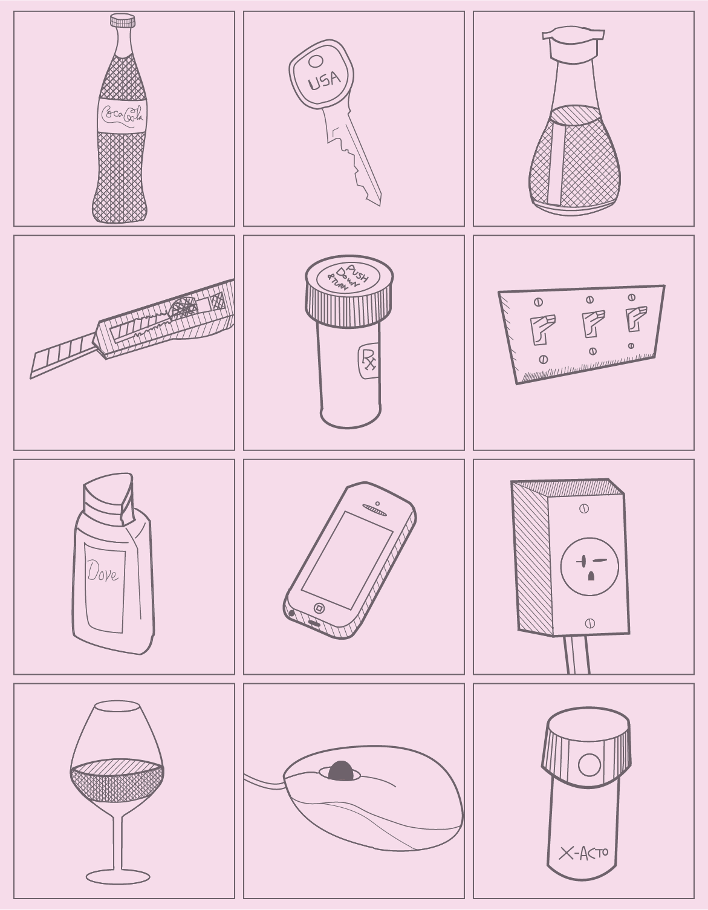

Industrial Artifacts: Vector Sketches
Software Used: Adobe Illustrator
My first Adobe Illustrator output! This project began with 24 hand drawn representational sketches. A DES16 instructor provided the grid layout shown. Since I'm primarily interested with industrial design, my focus was on objects that encompassed mass production in some capacity. All subjects were drawn from direct observation, found within or near my apartment. Twelve best of the initial hand drawn sketches were later redrawn in Illustrator using mainly the Pen Tool. Completing this assignment with effectively no hands on experience with Illustrator was definitely a major challenge. Nevertheless, the process of experimenting and revising my work taught me a lot about proper and effective usage of the pen tool and its bezier curve capabilities, which has since proved tremendously valuable.